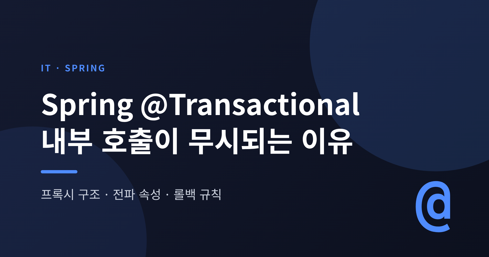
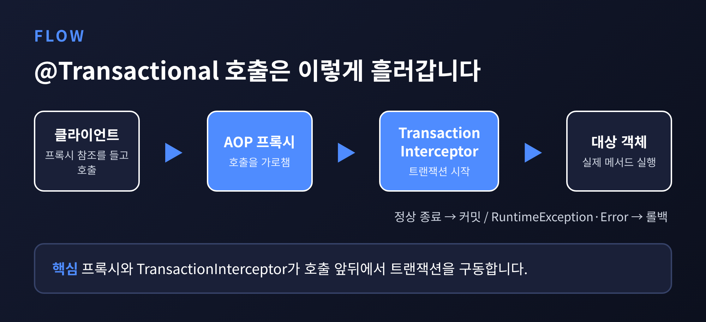
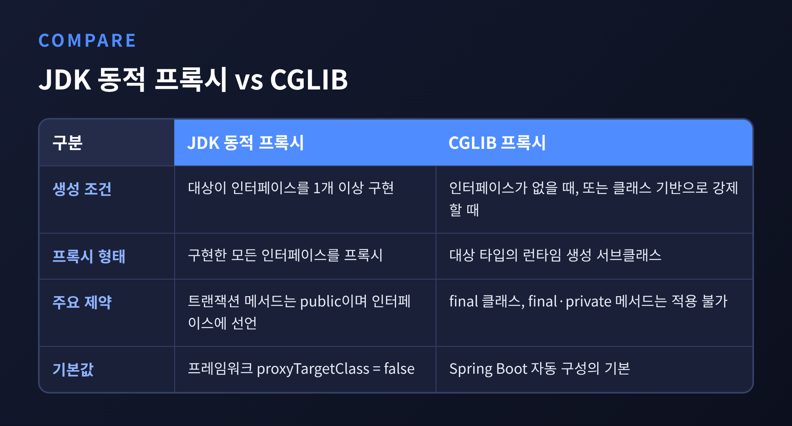
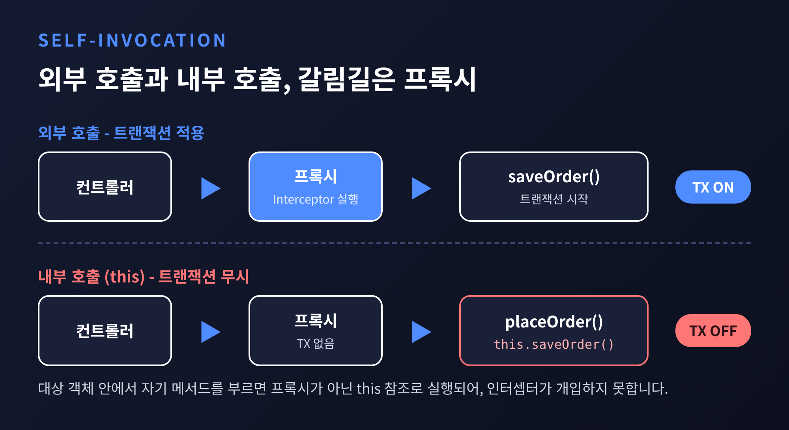
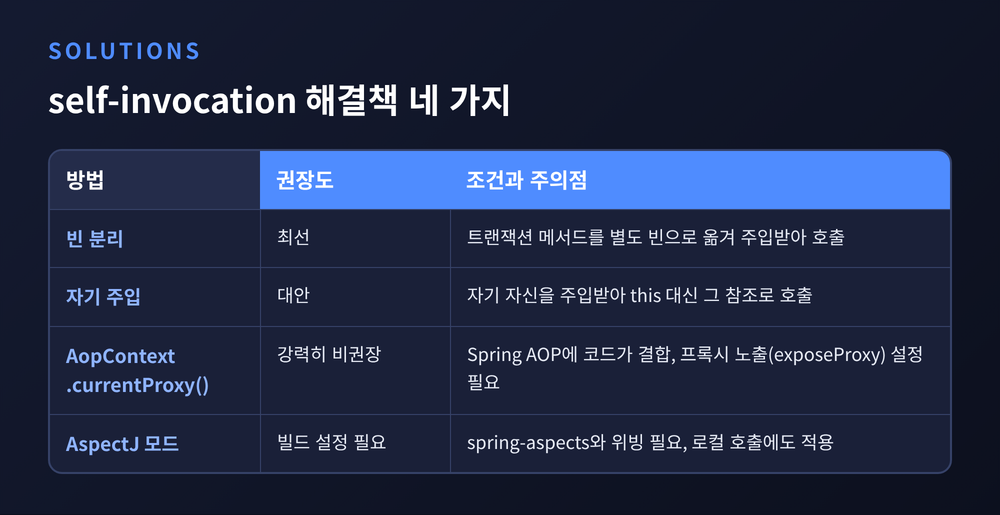
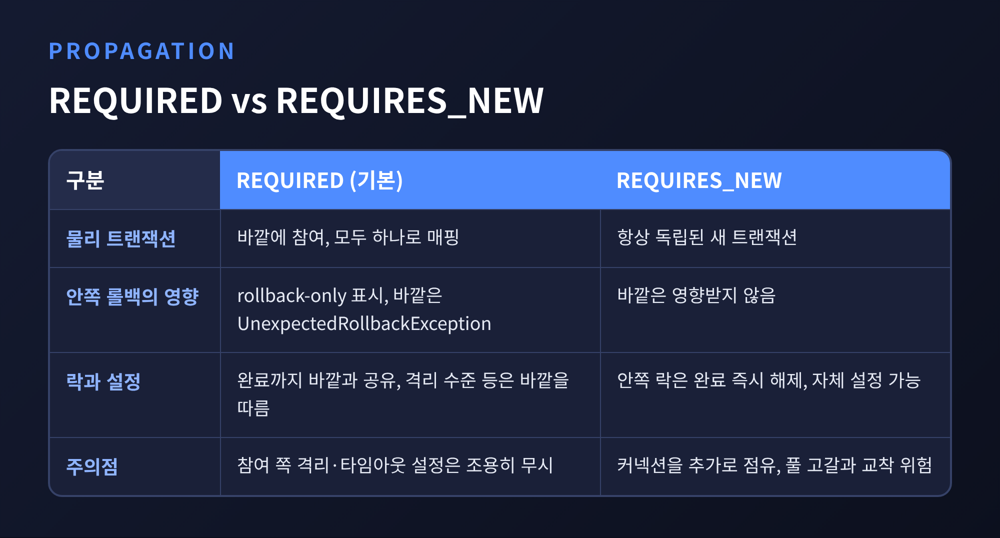

오늘은 Spring @Transactional이 프록시 위에서 동작하는 방식을 정리해 보려 합니다.
같은 클래스 안에서 @Transactional 메서드를 부르면 트랜잭션이 걸리지 않는 이유가 핵심입니다.
전파 속성(REQUIRED, REQUIRES_NEW)과 체크 예외가 기본으로 롤백되지 않는 규칙, 그리고 해결책과 함정까지 차례로 살펴보겠습니다.
3줄 요약
1.@Transactional은 AOP 프록시가 호출을 가로채야만 동작하며, 가로채는 주체는TransactionInterceptor입니다.
2. 같은 클래스 안의this호출은 프록시를 거치지 않으므로 트랜잭션 속성이 무시됩니다.
3. 기본 롤백은RuntimeException과Error뿐이며, 체크 예외는rollbackFor로 따로 지정해야 합니다.
Spring의 선언적 트랜잭션은 AOP 프록시를 통해 활성화됩니다.
공식 문서의 표현을 빌리면, 트랜잭션 메타데이터와 AOP가 결합해 TransactionInterceptor와 TransactionManager를 쓰는 프록시가 만들어집니다.
이 프록시가 메서드 호출의 앞뒤에서 트랜잭션을 구동하는 셈입니다.
TransactionInterceptor는 AOP Alliance의 MethodInterceptor입니다.
실제 트랜잭션 처리는 부모인 TransactionAspectSupport의 메서드를 정해진 순서로 부르는 방식으로 이루어집니다.
스레드 안전하게 설계되어 있고, 메서드 반환 타입으로 명령형과 리액티브 경로를 가려냅니다. Publisher나 Kotlin Flow면 리액티브, void를 포함한 나머지는 명령형입니다.
호출 흐름을 그려 보면 이렇습니다.

한 가지 전제가 있습니다. @Transactional은 메타데이터일 뿐입니다.@EnableTransactionManagement(또는 <tx:annotation-driven/>)가 있어야 프록시가 만들어집니다.
또 이 트랜잭션은 스레드에 묶여 동작하므로, 메서드 안에서 새로 띄운 스레드로는 전파되지 않습니다.
프록시는 두 가지 방식으로 만들어집니다.
대상이 인터페이스를 하나 이상 구현하면 JDK 동적 프록시가, 인터페이스가 없으면 대상 타입을 상속한 CGLIB 프록시가 쓰입니다.
CGLIB는 spring-core에 재포장되어 들어 있어 별도 의존성이 필요 없습니다.
예전엔 프레임워크 기본값이 인터페이스 기반이었습니다. proxyTargetClass의 기본값은 지금도 false입니다.
지금의 Spring Boot 앱은 다릅니다. 자동 구성이 기본적으로 CGLIB를 쓰도록 설정하고, JDK 프록시를 원하면 spring.aop.proxy-target-class=false로 바꿔야 합니다.
어느 쪽이 적용되는지는 환경에 따라 달라지므로, 직접 확인해 보시길 권합니다.

CGLIB에는 제약이 따릅니다.final 클래스는 확장할 수 없어 프록시가 불가능하고, final·private 메서드는 오버라이드할 수 없어 트랜잭션 어드바이스가 적용되지 않습니다.
메서드 가시성도 버전에 따라 다릅니다. 5.3까지는 public이 아닌 메서드를 무시하는 것이 기본이었고, 6.0부터는 클래스 기반 프록시에서 protected나 패키지 가시 메서드도 트랜잭션 대상이 될 수 있습니다.
인터페이스 기반 프록시에서는 여전히 public이면서 인터페이스에 선언된 메서드여야 합니다.
핵심은 this입니다.
외부 클라이언트가 쥐고 있는 것은 프록시 참조이고, 호출이 실제 대상 객체에 도달하면 그다음부터는 프록시가 끼어들 자리가 없습니다.
대상 객체 안에서 this.bar()처럼 자기 메서드를 부르면 프록시가 아니라 this 참조로 실행되기 때문입니다.
@Service
public class OrderService {
public void placeOrder() {
this.saveOrder(); // this 호출: 프록시를 거치지 않음
}
@Transactional
public void saveOrder() { // 트랜잭션이 시작되지 않는다
// 주문 저장
}
}Spring 문서는 이를 명확히 적고 있습니다. 프록시 모드에서는 프록시를 통한 외부 호출만 가로채지며, self-invocation은 호출된 메서드에 @Transactional이 붙어 있어도 실제 트랜잭션을 만들지 않는다는 것입니다.@EnableTransactionManagement 문서도 같은 취지로, 로컬 호출에 붙은 애노테이션은 인터셉터가 아예 개입하지 않으므로 무시된다고 설명합니다.

이 원리는 전파 속성에도 그대로 이어집니다.
같은 클래스 안에서 REQUIRES_NEW 메서드를 부르더라도 인터셉터가 개입하지 않으므로, 새 트랜잭션은 만들어지지 않습니다. 문서에 이 사례가 직접 적힌 것은 아니고, 위 원리에서 도출한 결과입니다.@PostConstruct 같은 초기화 코드에서도 조심해야 합니다. 프록시가 완전히 초기화되어야 기대대로 동작하기 때문입니다.
공식 문서가 제시하는 접근을 권장되는 순서대로 보겠습니다.
this 대신 그 참조로 호출합니다. 문서가 대안으로 소개합니다.AopContext.currentProxy()로 현재 프록시를 꺼냅니다. 문서는 이 방법을 강력히 비권장합니다. 코드가 Spring AOP에 완전히 결합되고, 프록시 노출(exposeProxy) 설정이 필요하기 때문입니다.@EnableTransactionManagement(mode = AdviceMode.ASPECTJ)를 쓰면 대상 클래스의 바이트코드를 위빙하므로 프록시가 없고, 로컬 호출도 가로채집니다.// 1번: 분리
@Service
public class OrderService {
private final OrderWriter writer;
public void placeOrder() {
writer.saveOrder(); // 다른 빈 -> 프록시를 거친다
}
}
@Service
public class OrderWriter {
@Transactional
public void saveOrder() { /* ... */ }
}
AspectJ 모드에는 조건이 붙습니다.spring-aspects 모듈이 클래스패스에 있어야 하고, 컴파일 타임 또는 로드 타임 위빙이 켜져 있어야 합니다. 이때 proxyTargetClass 값은 무시됩니다.
빌드 설정이 한 단계 늘어나는 부담이 있으므로, 대부분의 경우 1번으로 충분하다고 생각합니다.
@Transactional의 기본 전파 속성은 REQUIRED입니다. 격리 수준은 ISOLATION_DEFAULT, 읽기-쓰기 트랜잭션입니다.
REQUIRED는 바깥 트랜잭션이 있으면 그것에 참여하고, 없으면 새로 만듭니다. 메서드마다 논리 트랜잭션 범위가 생기지만, 모두 같은 물리 트랜잭션에 매핑됩니다.
여기서 흔한 함정이 하나 있습니다.
안쪽 범위에서 예외가 발생해 rollback-only 표시가 세워지면, 바깥 메서드는 예외를 던지지 않았더라도 커밋 시점에 UnexpectedRollbackException을 받습니다.
커밋된 줄 알았는데 실제로는 롤백된 상황을 호출자가 모르게 하지 않으려는, 의도된 동작입니다.
참여하는 쪽의 격리 수준·타임아웃·읽기 전용 설정은 기본적으로 조용히 무시된다는 점도 기억해 둘 만합니다.
REQUIRES_NEW는 항상 독립된 물리 트랜잭션을 씁니다.
안쪽이 롤백되어도 바깥은 영향받지 않고, 안쪽의 락은 완료 즉시 풀립니다. 감사 로그처럼 바깥 결과와 무관하게 남겨야 하는 작업에 어울립니다.

다만 대가가 있습니다.
바깥 트랜잭션의 커넥션은 그대로 잡힌 채 안쪽이 새 커넥션을 요구합니다. 여러 스레드가 이 상태로 서로 기다리면 커넥션 풀이 고갈되고 교착이 생길 수 있습니다.
문서는 풀 크기가 동시 스레드 수를 최소 1 초과하도록 적절히 키우지 않았다면 REQUIRES_NEW를 쓰지 말라고 권고합니다.
참고로 NESTED는 하나의 물리 트랜잭션 안에서 세이브포인트로 부분 롤백하는 방식이며, 주로 JDBC 세이브포인트에 매핑됩니다.
기본 설정에서 롤백을 일으키는 것은 RuntimeException(과 그 하위 클래스), 그리고 Error입니다.
체크 예외가 던져지면 트랜잭션은 롤백되지 않고 커밋됩니다. 이 사실을 모르고 throws Exception을 쓰다가 데이터가 반쯤 저장된 채 남는 경우가 있습니다.
@Transactional // IOException(체크 예외) -> 롤백되지 않음
public void importA() throws IOException { ... }
@Transactional(rollbackFor = Exception.class) // 체크 예외도 롤백
public void importB() throws IOException { ... }rollbackFor로 롤백할 예외 타입을, noRollbackFor로 롤백하지 않을 예외 타입을 지정합니다.
던져진 예외가 지정한 타입과 같거나 그 하위 클래스면 일치로 보며, 규칙이 충돌하면 가장 강하게 일치하는 규칙이 이깁니다.
6.2부터는 @EnableTransactionManagement(rollbackOn=ALL_EXCEPTIONS)로 전역 기본을 바꿀 수 있고, 문서는 우발적인 체크 예외까지 일관되게 다루기 위해 이를 권장합니다.
예외를 직접 잡아 삼키는 경우도 주의해야 합니다.
롤백은 트랜잭션 경계로 예외가 던져져 나올 때 판단되므로, 메서드 안에서 catch로 처리해 버리면 인터셉터에 도달하지 않습니다.
꼭 필요하다면 TransactionAspectSupport.currentTransactionStatus().setRollbackOnly()를 쓸 수 있으나, 문서는 이 방식이 Spring에 결합되는 침투적 방법이라며 선언적 방식을 강하게 권합니다.
정리하면 이렇습니다.@Transactional은 마법이 아니라 프록시와 TransactionInterceptor가 호출 앞뒤를 감싸는 구조이고, 그 사실 하나로 대부분의 함정이 설명됩니다.
"프록시를 거치지 않은 호출에는 트랜잭션도 없다."
이 글에서 다룬 내용은 모두 공식 문서를 바탕으로 했지만, 버전과 설정에 따라 세부 동작은 달라질 수 있습니다. 실제 서비스에 적용하실 때는 사용 중인 Spring 버전의 문서와 직접 돌려 본 테스트로 확인하시길 바랍니다.
다음에 @Transactional이 말을 듣지 않는다면, 코드를 의심하기 전에 호출이 어디를 통과했는지부터 보시겠습니까. 대개 답은 거기에 있습니다.